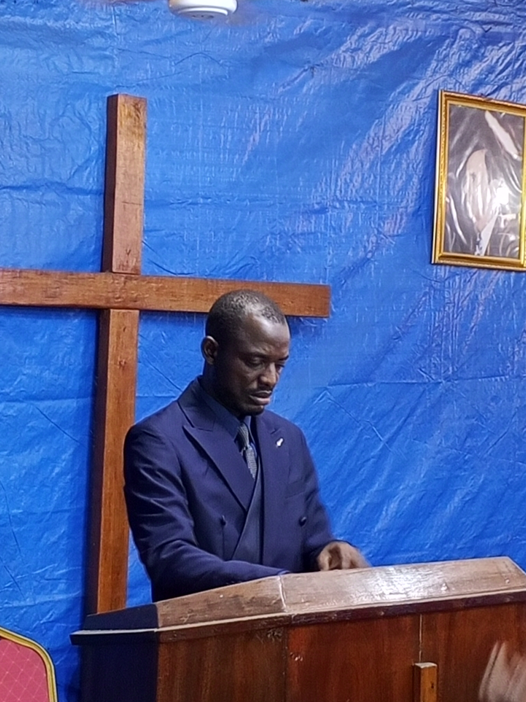

« Préparez le chemin du Seigneur, car son retour est proche. »
Découvrez le ministère, la vision et l'appel du Pasteur BOPE Bopaul.
Enseignements bibliques, prières, évangélisation et édification.
Photos des cultes, conférences et activités de l'Église.